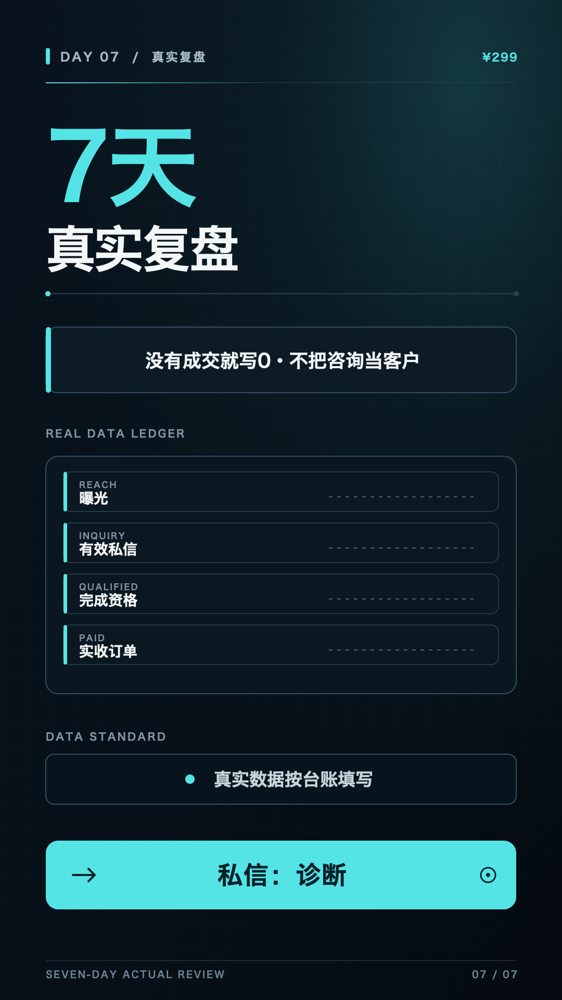

DAY 07 · ¥299 诊断 · 私信「诊断」
七天真实复盘，不拿目标冒充结果。
曝光、有效私信、完成资格、实收订单都按台账填写；没有成交就填 0。复盘只基于可证明的数据。
今日验收
- 发布视频与 X 主帖。
- 完成 8 条精准互动。
- 获得 1 个有效私信，完成全周回填。
10 小时安排
- 汇总七日台账。
- 按真实结果写复盘，删除无证据归因。
- 录制剪辑并仅展示可公开数据。
- 发布、收口私信、标记下一步。

打开 Day 7 竖屏封面 PNG ↗